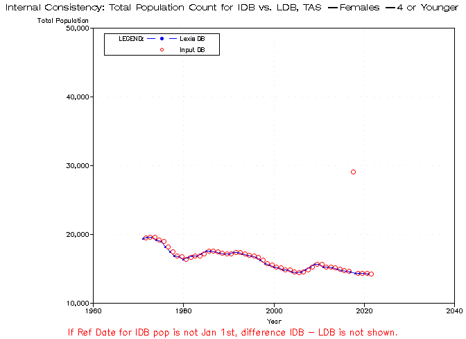
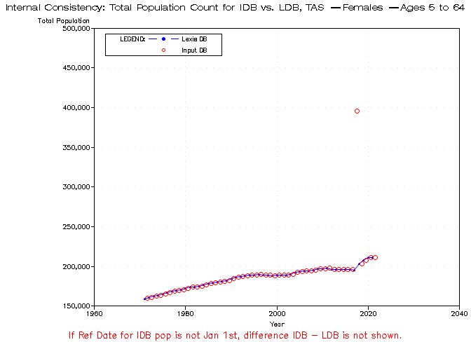
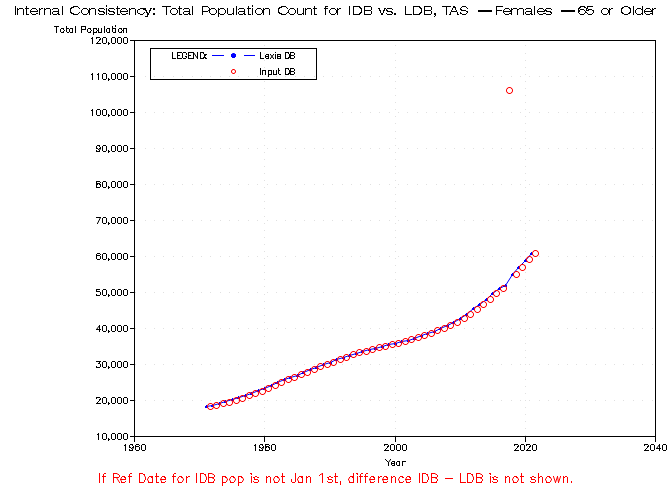
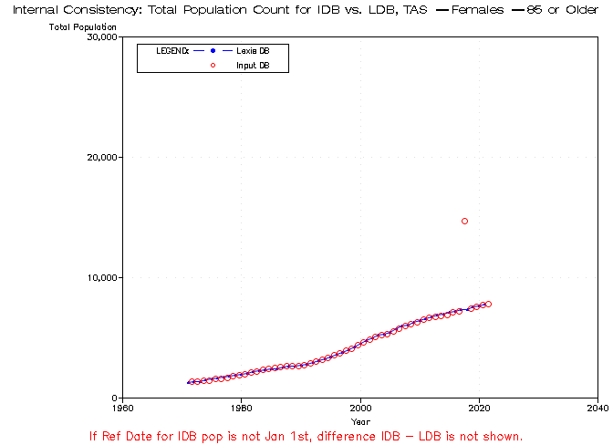
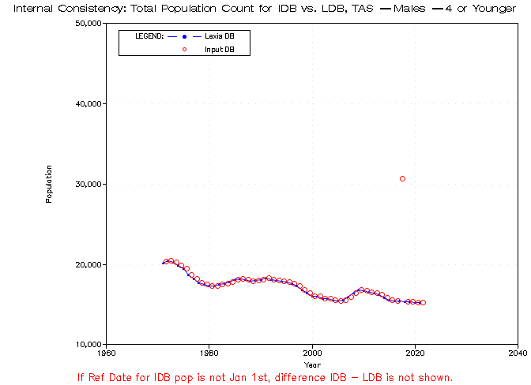
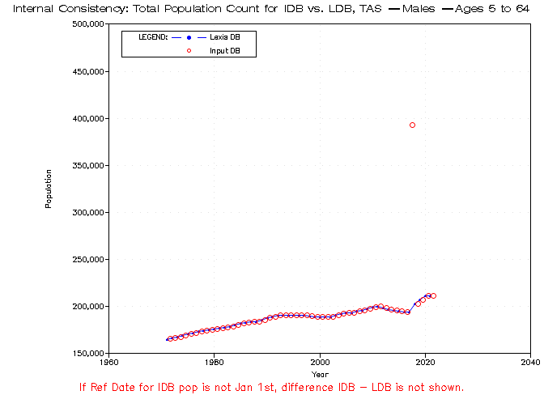
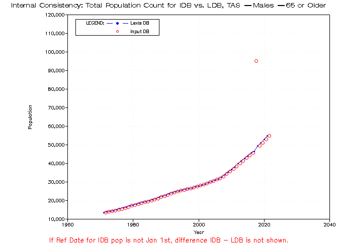
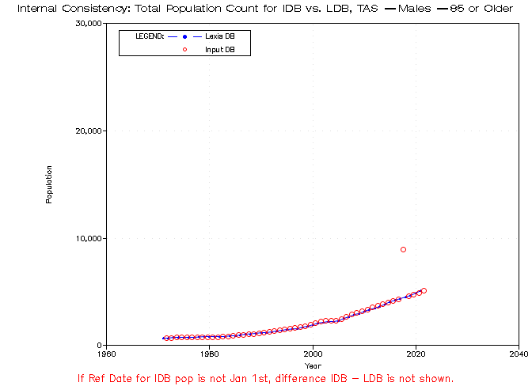
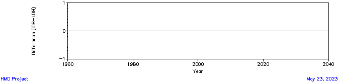

Diagnostic Charts for HMD Project - Country: TAS (TAS)
Internal consistency - Population by sex, age group and year in IDB and LDB









Beate Danielsen: hmd@demog.berkeley.edu
Last Updated:
May 23, 2023
![[ Population for age 0-4 - Females ]](intcon_popbyageAG0_4Fsub.png)
![[ Population for age 5-64 - Females ]](intcon_popbyageAG5_64Fsub.png)
![[ Population for age 65+ - Females ]](intcon_popbyageAG65_200Fsub.png)
![[ Population for age 85+ - Females ]](intcon_popbyageAG85_200Fsub.png)
![[ Population for age 0-4 - Males ]](intcon_popbyageAG0_4Msub.png)
![[ Population for age 5-64 - Males ]](intcon_popbyageAG5_64Msub.png)
![[ Population for age 65+ - Males ]](intcon_popbyageAG65_200Msub.png)